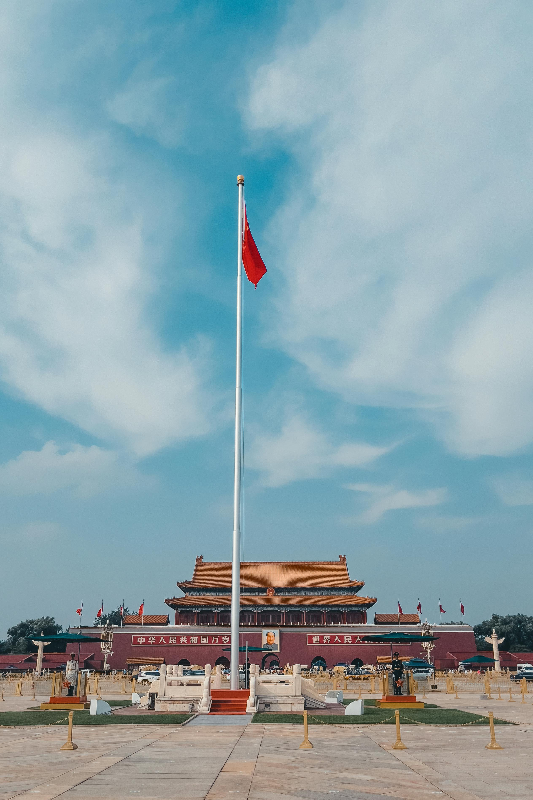

La Grande Muraille de Chine
La Grande Muraille de Chine est l'une des merveilles du monde. S'étendant sur plus de 21 000 kilomètres, elle a été construite pour protéger l'empire chinois des invasions. Aujourd'hui, elle est un symbole de la résilience et de la grandeur de la civilisation chinoise.

La Cité Interdite
La Cité Interdite à Pékin était autrefois le palais impérial et résidence des empereurs chinois. Elle est un chef-d'œuvre de l'architecture chinoise et l'un des plus grands complexes palatiaux au monde. Aujourd'hui, elle abrite le Musée du Palais, attirant des millions de visiteurs.